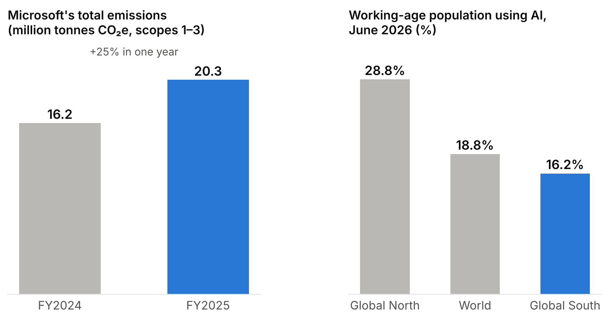
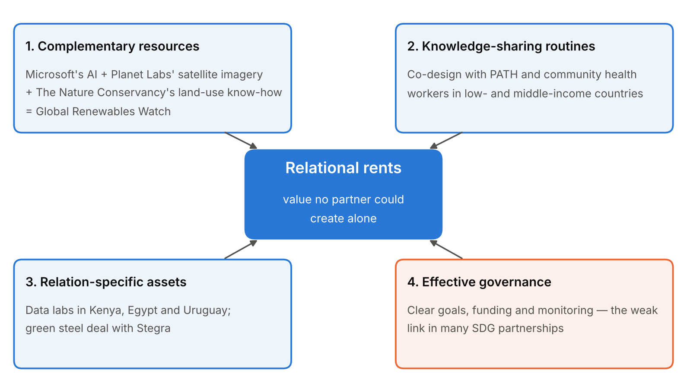
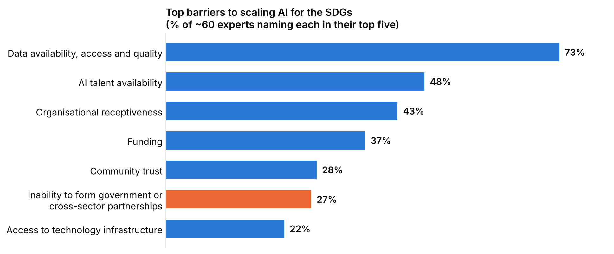

Two reports Microsoft published this year tell very different stories about artificial intelligence.
In July, the company revealed its greenhouse gas emissions rose 25% in a single year, to 20.3 million tonnes of carbon dioxide equivalent, driven largely by building data centres for AI. Two months later, its own researchers reported that AI use is spreading faster in rich countries than poor ones: 28.8% of working-age people in the Global North now use AI tools, against 16.2% in the Global South.
Yet Microsoft also sells AI as a tool for the planet. Its AI for Good Lab works on climate, health and humanitarian problems, and the company has pledged to be carbon negative by 2030.
Can both stories be true? The answer, I argue, depends less on Microsoft’s technology than on the quality of its relationships.

The global goals are slipping
The stakes are high. The UN’s 2026 progress report found only 36% of Sustainable Development Goal (SDG) targets are on track, while 15% have gone backwards since 2015.
AI could help. A widely cited study in Nature Communications concluded AI could enable 134 of the 169 SDG targets – but could also inhibit 59, often through its energy use and by widening inequality. A 2024 McKinsey analysis identified about 600 ways AI could support the goals, with more than 80% already in use somewhere.
The problem is scale. Of the AI-for-SDG foundation grants McKinsey analysed, 55% were worth US$250,000 or less, and only 10% went to organisations based in low- or middle-income countries.
Advantage lives between firms
Strategy scholars offer a useful lens. The relational view, proposed by Jeffrey Dyer and Harbir Singh in 1998, argues that competitive advantage often comes not from what a firm owns but from what it builds with partners. They identify four sources of these “relational rents”: investments tailored to a specific partnership; routines for sharing knowledge; complementary resources worth more combined than apart; and governance that builds trust.
Microsoft’s AI for Good work is essentially a relational strategy. The company has the models and the cloud. It does not own satellites, clinics or conservation scientists.
Take the Global Renewables Watch. Microsoft’s lab combined its AI with satellite imagery from Planet Labs and land-use expertise from The Nature Conservancy to map 86,410 solar farms and 375,197 wind turbines worldwide, quarter by quarter since 2017. No single partner could have built it – a textbook case of complementary resources supporting clean energy (SDG 7) and climate action (SDG 13).
In health, Microsoft researchers describe working with the global health non-profit PATH to deploy AI in low- and middle-income countries, from reading rapid diagnostic tests to modelling vaccine efficacy, stressing “co-design” with local communities (SDG 3). That is a knowledge-sharing routine in action.

Why partnerships stall
The relational view also explains why so many projects stay small. When McKinsey surveyed about 60 experts, the top barriers to scaling AI for good were data (73%), talent (48%) and organisational readiness (43%). Each is a relational problem: the data sits with governments, telecoms and satellite firms; the talent sits in big tech; the frontline know-how sits with NGOs.

Research on business–nonprofit collaboration by Austin and Seitanidi shows partnerships tend to move along a spectrum, from one-way philanthropy to “transformational” collaboration in which both sides change how they work. Many corporate AI-for-good efforts remain near the philanthropic end: small grants, cloud credits, pilots.
A 2018 update of the relational view adds a sharper warning. Partnerships create value, but someone captures it. If data, models and talent flow back to Redmond while partners in Nairobi or Montevideo stay dependent, the arrangement deepens the AI divide Microsoft’s own researchers are measuring – the opposite of reducing inequality (SDG 10).
There are signs of a shift. Microsoft has opened data labs in Kenya and Egypt, giving African scientists access to satellite imagery, and a new lab with Uruguay’s government. These are relation-specific investments: harder to walk away from, and more likely to build local capability.
The same logic applies to carbon
Microsoft’s emissions problem is also a partnership problem. About 86% of its footprint is “scope 3” – emissions in its supply chain, such as the steel and concrete in data centres.
Here, too, Microsoft is turning to relationships. In 2025 it struck a deal for near-zero-emissions steel from Swedish company Stegra, whose hydrogen-based plant could cut emissions by up to 95% compared with coal-based steelmaking. Microsoft’s chief sustainability officer said the aim was to “signal demand, enable project financing, and accelerate global production”. The company now has agreements for up to 40 gigawatts of new renewable energy across 26 countries (SDGs 7, 9 and 13).
These are exactly the commitments the theory predicts will create value. But they are not keeping pace. AI’s electricity demand could reach 85–134 terawatt-hours a year by 2027, comparable to the annual consumption of Sweden or Argentina. Microsoft itself concedes “sustainability solutions are not scaling fast enough to meet demand”.
Making the relationships count
The relational view points to three practical moves.
First, shift from short grants to long-term, co-owned partnerships in the Global South, where local institutions keep the data and skills they help create.
Second, treat outputs such as satellite-derived datasets and trained models as digital public goods by default, so value is shared rather than captured.
Third, report AI-for-good impact and the AI footprint in one ledger. A review in Ambio of multistakeholder partnerships for sustainable development found little evidence of strong performance, and named clear goals, reliable funding and monitoring as conditions for success. Partnerships must be measured to be trusted.
AI may yet become one of the strongest tools for meeting the SDGs. But for Microsoft, the decisive asset will not be its algorithms. It will be whether its partners end up stronger – and whether the planet’s ledger balances (SDG 17).